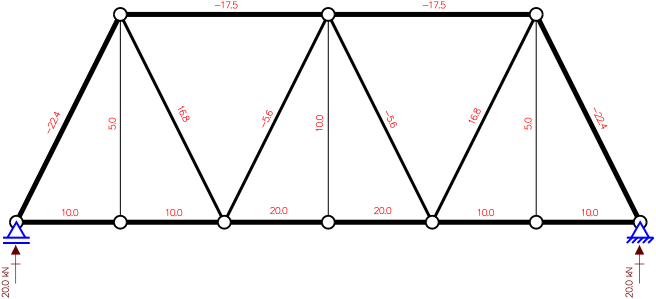
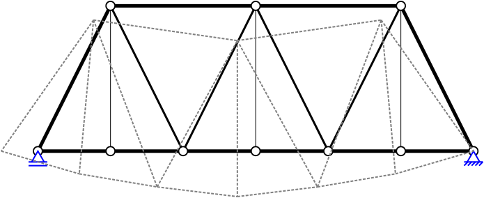
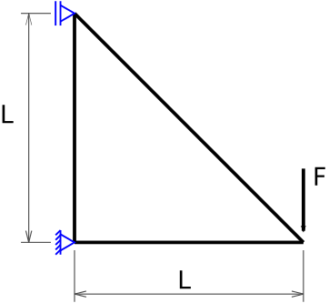

Treliça Plana
Idealização
O objeto estrutural da imagem a seguir é o seu objetivo, bem pelo menos parte da estrutura:
A Wills Creek Bollman Bridge é uma ponte em treliça do tipo Warren, mas a pergunta é: como obter os esforços em seus elementos estruturais para conseguir dimensioná-los?
Bom, você sendo um aluno do 4 ou 5 ano de engenharia civil sabe como fazer isso, pois a estrutura trata-se basicamente de duas treliças planas apoiadas sobe um apoio rotulado, não permite deslocamento vertical e horizontal (na direita da figura) e um apoio simples, não permite deslocamento vertical (na esquerda da figura), sendo, então, uma estrutura isostática.
O primeiro passo é a idealização estrutural, ou seja, transformar uma estrutura física real em um modelo idealizado representativo dos efeitos que ocorrem, ou irão ocorrer, na estrutura real. Como se trata de uma treliça, podemos idealizar da seguinte forma:

Então, basta aplicar as cargas permanentes de peso próprio, do pavimento, as acidentais de uso e vento, e obter os esforços através do método das forças ou método das seções.

Resolvido! Demorou né!? E como calcular os deslocamentos?

Então, e se pudessemos criar um programinha computacional para resolver essa treliça e calcular os deslocamentos, ou melhor, para resolver qualquer treliça plana?
Mas, vamos por partes, primeiro vamos usar uma treliça mais simples, de forma a controlarmos melhor o processo de solução na mão, e é claro, vamos resolver usando o Método dos Elementos Finitos.
Simplificação
Essa será a nossa treliça simples:

São apenas três barras, com apoios na barra vertical e carga concentrada na extremidade oposta. Essa treliça possui barras de aço ($E = 200 GPa$) e alumínio ($E = 69 GPa$), as barras vertical e horizontal são de alumínio a inclinada de aço. Todas as barras são tubulares maciças com diâmetro de 113 mm. A carga F é de 10.000 N e o comprimento L de 1,0 m.
Vamos começar pela Teoria!